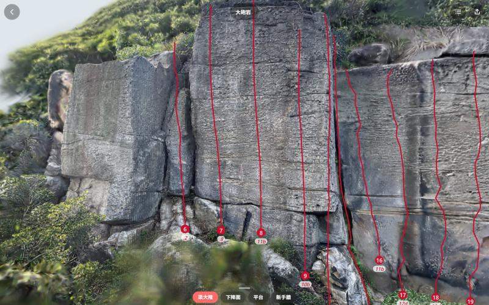

岩點貓
室內
這條線，換你來定。
拍下岩牆，自動找岩點、點選定線；也能開啟已建立的 3D 岩牆看線與定線。手機、電腦都能操作，完成後分享給岩友挑戰。
岩點貓把室內岩牆變成你的路線，紅點貓把天然岩場帶進手機。照片、路線和 Topo 用同一份開放格式：人看得懂，AI 也讀得懂。
拍下岩牆，自動找岩點、點選定線；也能開啟已建立的 3D 岩牆看線與定線。手機、電腦都能操作，完成後分享給岩友挑戰。

從世界收下岩場，離線查看照片 Topo、難度與路線；部分岩場也能沿著 3D 岩壁看線，並記錄爬過的路線。
紅點貓的岩場資料，來自岩友與作者整理的成果。已經有人整理好的，直接從世界收下；還沒有的，有三種方式帶進來。
給路線書作者與岩場維護者：舊的路線書不用重做，工具先整理，你只確認有疑問的地方。
岩點貓畫出來的路線，就是一份公開的格式。網站、App、AI 代理都讀得到，也能用同一套工具檢查、轉換、改進。